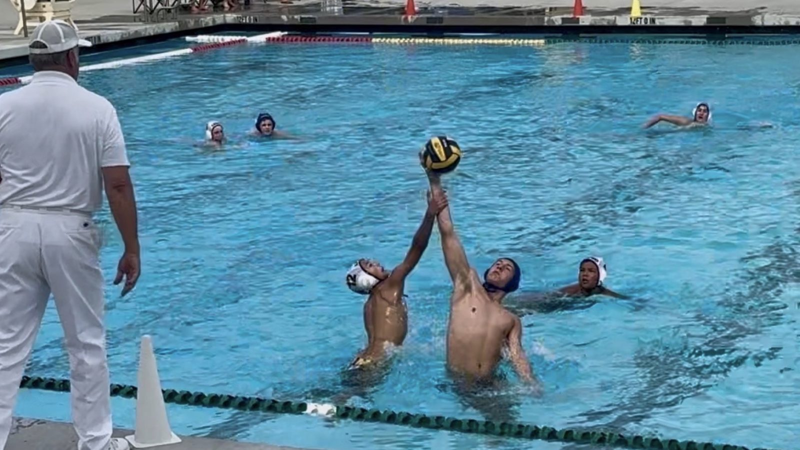

Verified results only
WPI uses tournament results that can be consistently tracked and validated. Local scrimmages, practices, and incomplete league results are excluded.
How WPI works
See how tournament evidence, head-to-head performance, team identity, and manual review shape every published WPI ranking.

Model principles
Division, bracket path, opponent quality, and recency all matter.
WPI uses tournament results that can be consistently tracked and validated. Local scrimmages, practices, and incomplete league results are excluded.
A lower-division champion can move up, but the path has to support it. Beating strong teams matters more than simply winning weaker brackets.
A/B/C team labels, age-group context, and club aliases are reviewed so one team’s result does not incorrectly lift another roster.
Recent results matter, especially Junior Olympics and qualifiers, but WPI still respects the full season body of work.
Rank movement reflects changed evidence: new wins, stronger losses, common opponents, bracket validation, or updated team-depth understanding.
Each ranking release should be checked for outliers, alias issues, division tier errors, and club ladder inconsistencies before publishing.